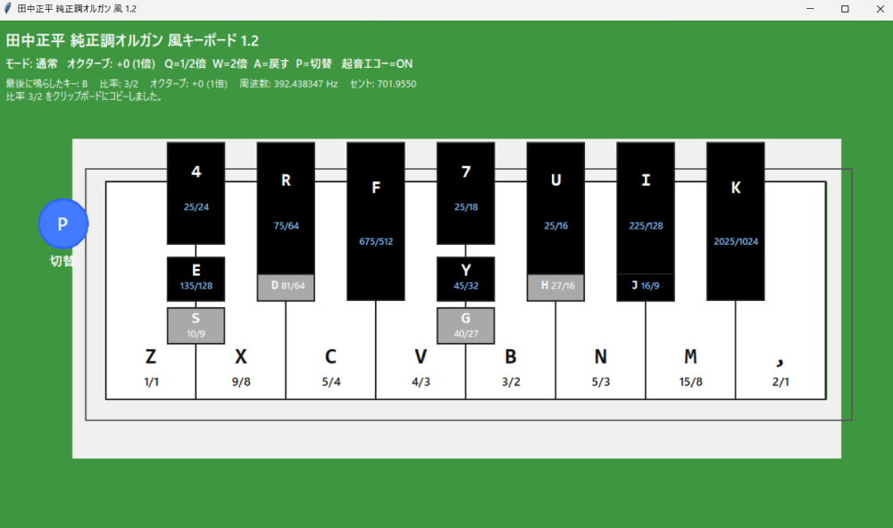
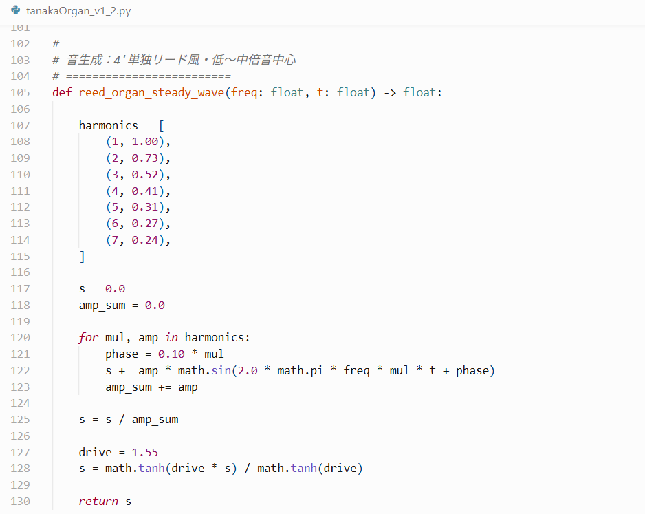
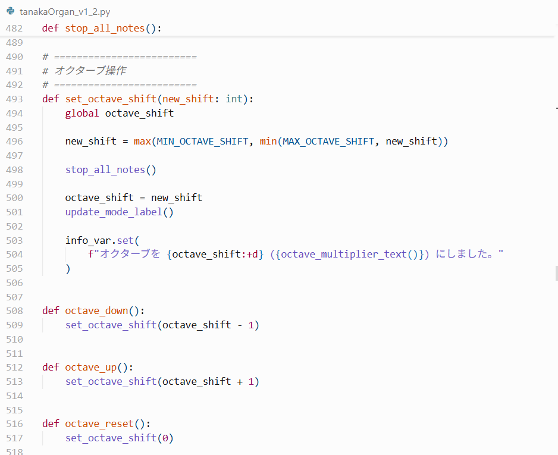

August 31, 2026
Timbre Design and Performance-Range Expansion in a Python Just-Intonation Keyboard v1.2 Referencing Tanaka Shōhei’s Just-Intonation Organ
Overview:
This project is version 1.2 of a Python just-intonation keyboard implemented by Reiji (age 10),
referencing Dr. Tanaka Shōhei’s just-intonation organ.
In the previous Python version, Reiji used an almost triangle-wave sound in order to make the pitch ratios easier to hear.
In this v1.2 version, he instead attempts to approach a reed-organ-like timbre by adjusting the strength of each harmonic component
from the fundamental through the seventh component, adding phase differences between the components, and applying a light nonlinear process
to give the tone a slightly harder reed-like character.
This version also adds octave control for the entire keyboard. The previous version was essentially limited to one octave,
but v1.2 allows the whole keyboard range to be shifted up or down by key operation. Pressing Q lowers the keyboard by one octave,
pressing W raises it by one octave, and pressing A resets it to the original 1x position. The available range is from -2 octaves to +2 octaves.
Through this update, the keyboard develops from a tool mainly for confirming just-intonation pitch ratios into a more performable experimental instrument interface.
The performance trial uses the theme from J. S. Bach’s BWV 996, V. Bourrée, to test the reed-organ-like timbre and the expanded octave range.
Note: All content on this page is originally explained by Reiji in Japanese. The English version is translated by AI and structured by a parent, with Reiji's final approval.
Reiji's Words and Ideas
-
What this is
This is version 1.2 of the keyboard that I implemented in Python, referencing Dr. Tanaka Shōhei’s just-intonation organ. -
Main difference from the previous version: timbre
The first major difference from the previous version is the timbre. In the previous version, I used an almost triangle-wave sound so that the pitch intervals would be easy to hear. In this version, I individually set the strengths of the components from the fundamental through the seventh component, and tried to bring the sound closer to a reed-organ-like timbre. -
Harmonic-component settings
The main parameters I used are as follows:
For example,harmonics = [ (1, 1.00), (2, 0.73), (3, 0.52), (4, 0.41), (5, 0.31), (6, 0.27), (7, 0.24), ] phase = 0.10 * mul drive = 1.55(2, 0.73)represents the strength of the second component,(3, 0.52)represents the strength of the third component, and(7, 0.24)represents the strength of the seventh component.
phaseis a value used to create phase differences between harmonic components.drive = 1.55is a setting that adds a reed-like hardness to the sound through a light nonlinear process usingtanh. However, if the sound is made too hard, the higher components become too strong and the sound becomes too metallic or harsh, so in this version I adjusted the sound mainly around the low-to-mid harmonic components. -
Important distinction: timbre components and 7-limit intervals
The seventh component discussed here is a harmonic component used for creating the timbre. It does not mean that the tuning system itself adopts 7-limit pitch ratios. The pitch-ratio structure referencing Tanaka Shōhei’s just-intonation organ is kept as before; this update focuses on how those pitches are sounded as timbre. -
Octave control
In the previous version, only one octave could be sounded. In this version, I made it possible to shift the entire keyboard up or down by key operation, increasing the range of pieces that can be performed.
Each time the Q key is pressed, the whole keyboard is lowered by one octave. Each time the W key is pressed, the whole keyboard is raised by one octave. Pressing the A key resets it to the initial state, meaning the 1x position. The range can be shifted from -2 octaves to +2 octaves. -
Attack echo
I also added a short attack echo that is layered only at the moment a key is pressed. Instead of mixing echo into the sustained tone itself, this adds a short resonance only to the beginning of the sound, giving the attack slightly more presence. -
Future plans
In the future, I plan to implement a transposition function. I also want to make a version compatible with a MIDI keyboard, so that the physical limitations of the PC keyboard can be removed. -
How to run the program
This application is written in Python.
Download tanakaOrgan_v1_2.py
First, save the filetanakaOrgan_v1_2.pyin any folder. The following example assumes that the file has been saved in theDownloadsfolder.
Open a terminal, Command Prompt, or PowerShell, move to the folder where the file is saved, install the required library, and run the app. The commands are as follows:
cd Downloads
python -m pip install pygame
python tanakaOrgan_v1_2.py
Note:Downloadsis only an example. Please replace it with the actual folder where the file is saved. If the file name is changed, replacetanakaOrgan_v1_2.pywith the new file name. -
Building a Windows exe file
If a Python environment is available, it is also possible to create a Windows executable file manually.
SavetanakaOrgan_v1_2.pyin any folder. The following example assumes that the file has been saved in theDownloadsfolder.
Open a terminal, Command Prompt, or PowerShell, and run the following commands:
cd Downloads
python -m pip install pyinstaller
python -m PyInstaller --onefile --windowed tanakaOrgan_v1_2.py
When the build is complete, an exe file will be generated inside thedistfolder.
Note:Downloadsis only an example. Please replace it according to the actual save location. -
Supplementary note
This application is an experimental tool for testing the layout, pitch-ratio switching, timbre design, octave control, and sound generation of a just-intonation keyboard referencing Tanaka Shōhei’s just-intonation organ. The ratio display for each key, the P-key switching function, the Q/W/A octave-control functions, the reed-organ-like timbre settings, the attack echo, and the sound-generation process are defined in the source code.

Full View of the Python Just-Intonation Keyboard v1.2
A full view of the new keyboard interface. Information about the octave-control function has been added to the mode display at the upper left. Q lowers the keyboard to 1/2x, W raises it to 2x, and A resets it to the original position. The P-key pitch-ratio switching function remains available. The ratio, octave state, frequency, and cent value of the last played key are displayed at the top of the screen.

Harmonic-Component Settings for a Reed-Organ-Like Timbre
The code section where the reed-organ-like timbre is designed.
The strengths of the components from the fundamental through the seventh component are individually specified,
and phase differences are added between the harmonic components.
A light nonlinear process using drive gives the sound a reed-like hardness.
The sound is adjusted mainly around the low-to-mid harmonic components, avoiding an overly harsh high-harmonic character.

Implementation of Octave-Control Processing
The main code section for the octave-control function.
set_octave_shift() updates the octave shift and limits the movable range from -2 octaves to +2 octaves.
When the octave is changed, the currently sounding notes are stopped once, and the display information is updated.
The Q, W, and A keys correspond to octave down, octave up, and reset.
| Source Code | Download tanakaOrgan_v1_2.py |
|---|---|
| Performance Trial Video | Python Just-Intonation Keyboard Trial — BWV 996 – V. Bourrée Theme after Tanaka Shōhei |
| Application Used |
Python / tkinter / pygame / AI-assisted coding |
| Tuning Settings |
Reference pitch: 1/1 = 261.625565 Hz Pitch ratios are defined as rational-number intervals based on just intonation. Certain tones can be switched using the P key, referencing the pitch-switching structure of Tanaka Shōhei’s just-intonation organ. |
| Version 1.2 Updates |
Reed-organ-like timbre design using individually weighted harmonic components. Octave shifting from -2 to +2 octaves using Q, W, and A keys. Short attack echo added only at the beginning of each note. |
| Sound Settings |
The sound is built from components from the fundamental through the seventh component. The component strengths, phase differences, and light nonlinear processing are adjusted to approach a reed-organ-like timbre. The seventh component here refers to timbre design, not to adopting a 7-limit tuning system. |
| Performance Trial |
J. S. Bach: BWV 996 – V. Bourrée Theme A short performance trial using the v1.2 keyboard and its expanded octave range. |
| Recording date |
August 31, 2026 Performance by a 10-year-old |
| Previous Version | |
| Reference |
Tanaka Shōhei’s Just-Intonation Organ The keyboard layout and pitch-switching idea in this project reference the structure of Dr. Tanaka Shōhei’s just-intonation organ. |
AI Assistant’s Notes and Inferences
This v1.2 update appears to move the project further toward the design of a small experimental electronic instrument. The earlier Python version already reconstructed a just-intonation keyboard based on rational pitch ratios and PC-keyboard performance. In this version, Reiji extends the instrument in three practical directions: timbre, attack character, and playable range.
- The timbre update is significant because Reiji is not simply replacing one waveform with another. He treats the strength of each harmonic component, the phase differences between components, and the hardness added by nonlinear processing as controllable parameters for shaping the sound.
- The distinction between harmonic components and 7-limit tuning is important. The seventh component in the sound source is part of timbre design. It should not be confused with a claim that the tuning system itself has been changed into a 7-limit system.
- The octave-shift function expands the keyboard from a one-octave pitch-confirmation tool into a more practical performance interface. By allowing the whole keyboard to move from -2 to +2 octaves, the system becomes suitable for testing a wider range of melodies.
- The attack echo is also an interesting design choice. Because it is added only at the beginning of the sound rather than mixed into the sustained loop, it gives the onset more presence without changing the continuous pitch-ratio structure too much.
- Using the Bourrée theme from J. S. Bach’s BWV 996 as a performance trial is appropriate for this version. Compared with the earlier BWV 691 chorale-theme trial, this melody benefits more clearly from the expanded octave range and from a more instrument-like timbre.
- Overall, v1.2 keeps the theoretical basis of the earlier Tanaka Shōhei-inspired just-intonation keyboard while expanding the project toward sound design, performance usability, and future MIDI-keyboard compatibility. This makes the work valuable not only as a tuning experiment, but also as a prototype for an original performance tool.